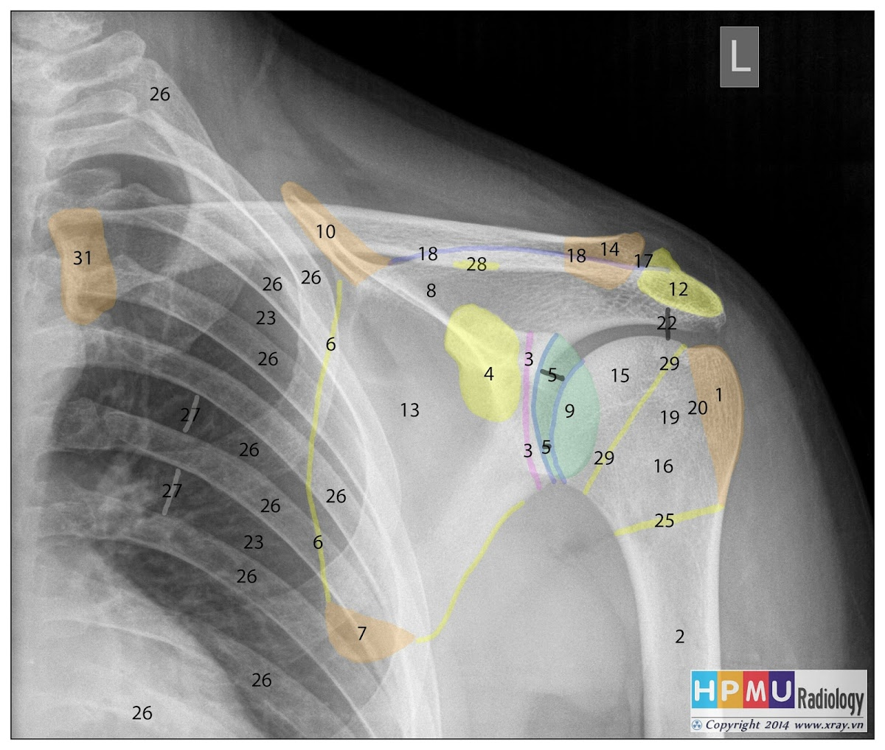
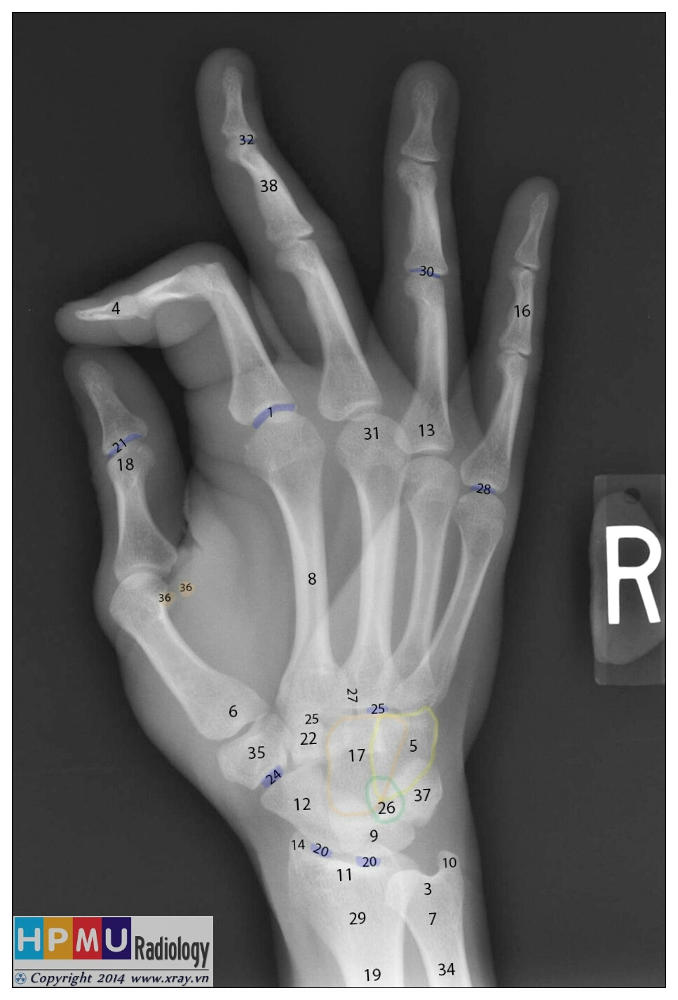

Giải Phẫu X-Quang Chi Trên
I. Khớp vai

© Chẩn Đoán Hình Ảnh Xray.vn
![Chú thích: 1. Củ lớn; 2. Thân xương cánh tay; 3. Cổ ổ chảo; 4. Mỏm quạ; 5. Khớp vai; 6. Xương bả vai; 7. Góc dưới xương bả vai; 8. Hố trên gai; 9. Ổ chảo; 10. Góc trên xương bả vai; 12. Mỏm cùng vai; 13. Thân xương bả vai; 14. Đầu ngoài xương đòn; 15. Chỏm xương cánh tay; 16. Hành xương cánh tay; 17. Khớp cùng đòn ; 18. Gai xương bả vai; 19. Củ bé; 20. Rãnh gian củ; 22. Khoang mỏm cùng vai - xương cánh tay; 23. Nhu mô phổi; 25. Cổ phẫu thuật; 26. Xương sườn; 27. Khoang liên sườn; 29. Cổ giải phẫu; 31. Đầu trong xương đòn.](giai-phau-x-quang-chi-tren_anh/Normal-Radiographic-Anatomy-Standard-Views-of-Shoulder-1_Xray.vn_.jpg)
Chú thích: 1. Củ lớn; 2. Thân xương cánh tay; 3. Cổ ổ chảo; 4. Mỏm quạ; 5. Khớp vai; 6. Xương bả vai; 7. Góc dưới xương bả vai; 8. Hố trên gai; 9. Ổ chảo; 10. Góc trên xương bả vai; 12. Mỏm cùng vai; 13. Thân xương bả vai; 14. Đầu ngoài xương đòn; 15. Chỏm xương cánh tay; 16. Hành xương cánh tay; 17. Khớp cùng đòn ; 18. Gai xương bả vai; 19. Củ bé; 20. Rãnh gian củ; 22. Khoang mỏm cùng vai – xương cánh tay; 23. Nhu mô phổi; 25. Cổ phẫu thuật; 26. Xương sườn; 27. Khoang liên sườn; 29. Cổ giải phẫu; 31. Đầu trong xương đòn.
![Chú thích: 1. Củ nón xương đòn; 2. Đầu ngoài xương đòn; 3. Mỏm quạ; 4. Bờ trên xương bả vai; 5. Khoang mỏm quạ - xương đòn; 6. Mỏm cùng vai; 7. Gai vai; 8. Góc trên xương bả vai; 9. Khớp cùng vai đòn; 10. Cung sau xương sườn 4; 11. Thân xương cánh tay; 12. Cổ phẫu thuật xương cánh tay; 13. Bờ ngoài xương bả vai; 14. Bờ trong xương bả vai; 15. Cổ giải phẫu xương cánh tay; 16. Khoang liên sườn; 17. Cổ ổ chảo; 18. Củ bé; 19. Ổ chảo; 20. Củ lớn; 21. Khớp vai; 22. Chỏm xương cánh tay; 23. Thân xương bả vai.](giai-phau-x-quang-chi-tren_anh/2-141.jpg)
Chú thích: 1. Củ nón xương đòn; 2. Đầu ngoài xương đòn; 3. Mỏm quạ; 4. Bờ trên xương bả vai; 5. Khoang mỏm quạ – xương đòn; 6. Mỏm cùng vai; 7. Gai vai; 8. Góc trên xương bả vai; 9. Khớp cùng vai đòn; 10. Cung sau xương sườn 4; 11. Thân xương cánh tay; 12. Cổ phẫu thuật xương cánh tay; 13. Bờ ngoài xương bả vai; 14. Bờ trong xương bả vai; 15. Cổ giải phẫu xương cánh tay; 16. Khoang liên sườn; 17. Cổ ổ chảo; 18. Củ bé; 19. Ổ chảo; 20. Củ lớn; 21. Khớp vai; 22. Chỏm xương cánh tay; 23. Thân xương bả vai.
II. Khuỷu tay
Chú thích: 1. Xương cánh tay; 2. Lồi củ xương quay; 3. Thân xương trụ; 5. Thân xương quay; 6. Mỏm lồi cầu trong; 7. Ròng rọc; 8. Hố khuỷu; 9. Cổ đài quay; 10. Mỏm vẹt; 11. Mỏm lồi cầu ngoài; 12. Mỏm khuỷu; 15. Khớp cánh tay trụ; 16. Xương cánh tay; 17. Khớp cánh tay quay; 20. Lồi cầu xương cánh tay; 21. Đài quay.
Chú thích: 1. Xương cánh tay; 2. Lồi củ xương quay; 3. Thân xương trụ; 5. Thân xương quay; 6. Mỏm lồi cầu trong; 7. Ròng rọc; 8. Hố khuỷu; 9. Cổ đài quay; 10. Mỏm vẹt; 11. Mỏm lồi cầu ngoài; 12. Mỏm khuỷu; 15. Khớp cánh tay trụ; 16. Xương cánh tay; 17. Khớp cánh tay quay; 20. Lồi cầu xương cánh tay; 21. Đài quay.
Chú thích: 1. Xương cánh tay; 2. Lồi củ xương quay; 3. Thân xương trụ; 5. Thân xương quay; 6. Mỏm lồi cầu trong; 7. Ròng rọc; 8. Hố khuỷu; 9. Cổ đài quay; 10. Mỏm vẹt; 11. Mỏm lồi cầu ngoài; 12. Mỏm khuỷu; 15. Khớp cánh tay trụ; 16. Xương cánh tay; 17. Khớp cánh tay quay; 19. Đệm mỡ trước; 20. Lồi cầu xương cánh tay; 21. Đài quay.
![Chú thích: 1. Mỏm trên lồi cầu ngoài; 2. Hành xương cánh tay; 3. Mỏm trên lồi cầu trong; 4. Hố khuỷu; 5. Cổ xương quay; 6. Mỏm vẹt; 7. Khớp quay trụ trên; 8. Khuyết quay; 9. Khớp cánh tay trụ; 10. Xương cánh tay; 11. Khớp cánh tay quay; 12. Hố vẹt; 13. Ròng rọc; 14. Lớp mỡ; 15. Lồi cầu xương cánh tay; 16. Rãnh ròng rọc; 17. Đầu gần thân xương quay; 18. Đài quay; 19. Mỏm khuỷu; 20. Lồi củ xương quay; 21. Đầu gần thân xương trụ; 22. Thân xương trụ; 23. Thân xương quay; 24. Đầu xa thân xương trụ; 25. Đầu xa thân xương quay.](giai-phau-x-quang-chi-tren_anh/collage_Xray.vn_-10.jpg)
Chú thích: 1. Mỏm trên lồi cầu ngoài; 2. Hành xương cánh tay; 3. Mỏm trên lồi cầu trong; 4. Hố khuỷu; 5. Cổ xương quay; 6. Mỏm vẹt; 7. Khớp quay trụ trên; 8. Khuyết quay; 9. Khớp cánh tay trụ; 10. Xương cánh tay; 11. Khớp cánh tay quay; 12. Hố vẹt; 13. Ròng rọc; 14. Lớp mỡ; 15. Lồi cầu xương cánh tay; 16. Rãnh ròng rọc; 17. Đầu gần thân xương quay; 18. Đài quay; 19. Mỏm khuỷu; 20. Lồi củ xương quay; 21. Đầu gần thân xương trụ; 22. Thân xương trụ; 23. Thân xương quay; 24. Đầu xa thân xương trụ; 25. Đầu xa thân xương quay.
![Chú thích: 1. Mỏm trên lồi cầu ngoài; 2. Hành xương cánh tay; 3. Mỏm trên lồi cầu trong; 4. Hố khuỷu; 5. Cổ xương quay; 6. Mỏm vẹt; 7. Khớp quay trụ trên; 8. Khuyết quay; 9. Khớp cánh tay trụ; 10. Xương cánh tay; 11. Khớp cánh tay quay; 12. Hố vẹt; 13. Ròng rọc; 14. Lớp mỡ; 15. Lồi cầu xương cánh tay; 16. Rãnh ròng rọc; 17. Đầu gần thân xương quay; 18. Đài quay; 19. Mỏm khuỷu; 20. Lồi củ xương quay; 21. Đầu gần thân xương trụ; 22. Thân xương trụ; 23. Thân xương quay; 24. Đầu xa thân xương trụ; 25. Đầu xa thân xương quay.](giai-phau-x-quang-chi-tren_anh/collage_20151213214817601_Xray.vn_.jpg)
Chú thích: 1. Mỏm trên lồi cầu ngoài; 2. Hành xương cánh tay; 3. Mỏm trên lồi cầu trong; 4. Hố khuỷu; 5. Cổ xương quay; 6. Mỏm vẹt; 7. Khớp quay trụ trên; 8. Khuyết quay; 9. Khớp cánh tay trụ; 10. Xương cánh tay; 11. Khớp cánh tay quay; 12. Hố vẹt; 13. Ròng rọc; 14. Lớp mỡ; 15. Lồi cầu xương cánh tay; 16. Rãnh ròng rọc; 17. Đầu gần thân xương quay; 18. Đài quay; 19. Mỏm khuỷu; 20. Lồi củ xương quay; 21. Đầu gần thân xương trụ; 22. Thân xương trụ; 23. Thân xương quay; 24. Đầu xa thân xương trụ; 25. Đầu xa thân xương quay.
![Chú thích: 1. Mỏm trên lồi cầu ngoài; 2. Hành xương cánh tay; 3. Mỏm trên lồi cầu trong; 4. Hố khuỷu; 5. Cổ xương quay; 6. Mỏm vẹt; 7. Khớp quay trụ trên; 8. Khuyết quay; 9. Khớp cánh tay trụ; 10. Xương cánh tay; 11. Khớp cánh tay quay; 12. Hố vẹt; 13. Ròng rọc; 14. Lớp mỡ; 15. Lồi cầu xương cánh tay; 16. Rãnh ròng rọc; 17. Đầu gần thân xương quay; 18. Đài quay; 19. Mỏm khuỷu; 20. Lồi củ xương quay; 21. Đầu gần thân xương trụ; 22. Thân xương trụ; 23. Thân xương quay; 24. Đầu xa thân xương trụ; 25. Đầu xa thân xương quay.](giai-phau-x-quang-chi-tren_anh/Normal-Radiographic-Anatomy-Additional-Views-of-Elbow-5_Xray.vn_.jpg)
Chú thích: 1. Mỏm trên lồi cầu ngoài; 2. Hành xương cánh tay; 3. Mỏm trên lồi cầu trong; 4. Hố khuỷu; 5. Cổ xương quay; 6. Mỏm vẹt; 7. Khớp quay trụ trên; 8. Khuyết quay; 9. Khớp cánh tay trụ; 10. Xương cánh tay; 11. Khớp cánh tay quay; 12. Hố vẹt; 13. Ròng rọc; 14. Lớp mỡ; 15. Lồi cầu xương cánh tay; 16. Rãnh ròng rọc; 17. Đầu gần thân xương quay; 18. Đài quay; 19. Mỏm khuỷu; 20. Lồi củ xương quay; 21. Đầu gần thân xương trụ; 22. Thân xương trụ; 23. Thân xương quay; 24. Đầu xa thân xương trụ; 25. Đầu xa thân xương quay.
![Chú thích: 1. Mỏm trên lồi cầu ngoài; 2. Hành xương cánh tay; 3. Mỏm trên lồi cầu trong; 4. Hố khuỷu; 5. Cổ xương quay; 6. Mỏm vẹt; 7. Khớp quay trụ trên; 8. Khuyết quay; 9. Khớp cánh tay trụ; 10. Xương cánh tay; 11. Khớp cánh tay quay; 12. Hố vẹt; 13. Ròng rọc; 14. Lớp mỡ; 15. Lồi cầu xương cánh tay; 16. Rãnh ròng rọc; 17. Đầu gần thân xương quay; 18. Đài quay; 19. Mỏm khuỷu; 20. Lồi củ xương quay; 21. Đầu gần thân xương trụ; 22. Thân xương trụ; 23. Thân xương quay; 24. Đầu xa thân xương trụ; 25. Đầu xa thân xương quay.](giai-phau-x-quang-chi-tren_anh/69360669_Xray.vn_.jpg)
Chú thích: 1. Mỏm trên lồi cầu ngoài; 2. Hành xương cánh tay; 3. Mỏm trên lồi cầu trong; 4. Hố khuỷu; 5. Cổ xương quay; 6. Mỏm vẹt; 7. Khớp quay trụ trên; 8. Khuyết quay; 9. Khớp cánh tay trụ; 10. Xương cánh tay; 11. Khớp cánh tay quay; 12. Hố vẹt; 13. Ròng rọc; 14. Lớp mỡ; 15. Lồi cầu xương cánh tay; 16. Rãnh ròng rọc; 17. Đầu gần thân xương quay; 18. Đài quay; 19. Mỏm khuỷu; 20. Lồi củ xương quay; 21. Đầu gần thân xương trụ; 22. Thân xương trụ; 23. Thân xương quay; 24. Đầu xa thân xương trụ; 25. Đầu xa thân xương quay.
III. Cổ tay
![Chú thích: 1. Hành xương quay; 2. Khớp bàn ngón II; 3. Mỏm trâm quay; 4. Đầu xương trụ; 5. Xương tháp; 6. Xương đậu; 8. Xương móc; 9. Xương móc; 10. Nền xương bàn I; 11. Hành xương trụ; 12. Thân xương bàn II; 13. Xương nguyệt; 14. Đầu xương quay; 15. Chỏm xương bàn III; 16. Xương thuyền; 17. Nền đốt 1 ngón IV; 19. Xương cả; 21. Thân xương quay; 23. Khớp cổ tay quay; 25. Khớp quay trụ dưới; 26. Khớp gian cổ tay; 27. Khớp bàn cổ tay; 28. Gian khớp xương bàn tay; 29. Khớp bàn ngón V; 32. Lớp mỡ; 33. Thân xương trụ; 34. Lớp mỡ; 35. Mỏm trâm trụ; 36. Xương thang; 37. Xương vừng; 38. Xương thê.](giai-phau-x-quang-chi-tren_anh/69360801_Xray.vn_.jpg)
Chú thích: 1. Hành xương quay; 2. Khớp bàn ngón II; 3. Mỏm trâm quay; 4. Đầu xương trụ; 5. Xương tháp; 6. Xương đậu; 8. Xương móc; 9. Xương móc; 10. Nền xương bàn I; 11. Hành xương trụ; 12. Thân xương bàn II; 13. Xương nguyệt; 14. Đầu xương quay; 15. Chỏm xương bàn III; 16. Xương thuyền; 17. Nền đốt 1 ngón IV; 19. Xương cả; 21. Thân xương quay; 23. Khớp cổ tay quay; 25. Khớp quay trụ dưới; 26. Khớp gian cổ tay; 27. Khớp bàn cổ tay; 28. Gian khớp xương bàn tay; 29. Khớp bàn ngón V; 32. Lớp mỡ; 33. Thân xương trụ; 34. Lớp mỡ; 35. Mỏm trâm trụ; 36. Xương thang; 37. Xương vừng; 38. Xương thê.
![Chú thích: 1. Hành xương quay; 2. Khớp bàn ngón II; 3. Mỏm trâm quay; 4. Đầu xương trụ; 5. Xương tháp; 6. Xương đậu; 8. Xương móc; 9. Xương móc; 10. Nền xương bàn I; 11. Hành xương trụ; 12. Thân xương bàn II; 13. Xương nguyệt; 14. Đầu xương quay; 15. Chỏm xương bàn III; 16. Xương thuyền; 17. Nền đốt 1 ngón IV; 19. Xương cả; 21. Thân xương quay; 23. Khớp cổ tay quay; 25. Khớp quay trụ dưới; 26. Khớp gian cổ tay; 27. Khớp bàn cổ tay; 28. Gian khớp xương bàn tay; 29. Khớp bàn ngón V; 32. Lớp mỡ; 33. Thân xương trụ; 34. Lớp mỡ; 35. Mỏm trâm trụ; 36. Xương thang; 37. Xương vừng; 38. Xương thê.](giai-phau-x-quang-chi-tren_anh/69360805_Xray.vn_.jpg)
Chú thích: 1. Hành xương quay; 2. Khớp bàn ngón II; 3. Mỏm trâm quay; 4. Đầu xương trụ; 5. Xương tháp; 6. Xương đậu; 8. Xương móc; 9. Xương móc; 10. Nền xương bàn I; 11. Hành xương trụ; 12. Thân xương bàn II; 13. Xương nguyệt; 14. Đầu xương quay; 15. Chỏm xương bàn III; 16. Xương thuyền; 17. Nền đốt 1 ngón IV; 19. Xương cả; 21. Thân xương quay; 23. Khớp cổ tay quay; 25. Khớp quay trụ dưới; 26. Khớp gian cổ tay; 27. Khớp bàn cổ tay; 28. Gian khớp xương bàn tay; 29. Khớp bàn ngón V; 32. Lớp mỡ; 33. Thân xương trụ; 34. Lớp mỡ; 35. Mỏm trâm trụ; 36. Xương thang; 37. Xương vừng; 38. Xương thê.
![Chú thích: 1. Hành xương quay; 2. Khớp bàn ngón II; 3. Mỏm trâm quay; 4. Đầu xương trụ; 5. Xương tháp; 6. Xương đậu; 8. Xương móc; 9. Xương móc; 10. Nền xương bàn I; 11. Hành xương trụ; 12. Thân xương bàn II; 13. Xương nguyệt; 14. Đầu xương quay; 15. Chỏm xương bàn III; 16. Xương thuyền; 17. Nền đốt 1 ngón IV; 19. Xương cả; 21. Thân xương quay; 23. Khớp cổ tay quay; 25. Khớp quay trụ dưới; 26. Khớp gian cổ tay; 27. Khớp bàn cổ tay; 28. Gian khớp xương bàn tay; 29. Khớp bàn ngón V; 32. Lớp mỡ; 33. Thân xương trụ; 34. Lớp mỡ; 35. Mỏm trâm trụ; 36. Xương thang; 37. Xương vừng; 38. Xương thê.](giai-phau-x-quang-chi-tren_anh/69360792_Xray.vn_.jpg)
Chú thích: 1. Hành xương quay; 2. Khớp bàn ngón II; 3. Mỏm trâm quay; 4. Đầu xương trụ; 5. Xương tháp; 6. Xương đậu; 8. Xương móc; 9. Xương móc; 10. Nền xương bàn I; 11. Hành xương trụ; 12. Thân xương bàn II; 13. Xương nguyệt; 14. Đầu xương quay; 15. Chỏm xương bàn III; 16. Xương thuyền; 17. Nền đốt 1 ngón IV; 19. Xương cả; 21. Thân xương quay; 23. Khớp cổ tay quay; 25. Khớp quay trụ dưới; 26. Khớp gian cổ tay; 27. Khớp bàn cổ tay; 28. Gian khớp xương bàn tay; 29. Khớp bàn ngón V; 32. Lớp mỡ; 33. Thân xương trụ; 34. Lớp mỡ; 35. Mỏm trâm trụ; 36. Xương thang; 37. Xương vừng; 38. Xương thê.

Chú thích: 1. Xương cả; 3. Mỏm trâm trụ; 5. Mỏm trâm quay; 6. Đầu xương trụ; 7. Xương tháp; 9. Xương đậu; 11. Xương móc; 12. Hành xương quay; 13. Xương móc; 14. Nền xương bàn I; 15. Thân xương bàn II; 16. Xương nguyệt; 18. Đầu xương quay; 20. Xương thuyền; 23. Thân xương quay; 25. Khớp cổ tay quay; 27. Khớp quay trụ dưới; 28. Khớp gian cổ tay; 30. Gian khớp xương bàn tay; 32. Thân xương trụ; 35. Xương thang; 36. Xương vừng; 37. Xương thê; 38. Hành xương trụ.

Chú thích: 1. Khớp bàn ngón II; 2. Lớp mỡ; 3. Đầu xương trụ; 4. Đốt 3 ngón II; 5. Xương móc; 6. Nền xương bàn I; 7. Hành xương trụ; 8. Thân xương bàn II; 9. Xương nguyệt; 10. Mỏm trâm trụ; 11. Đầu xương quay; 12. Xương thuyền; 13. Nền đốt 1 ngón IV; 14. Mỏm trâm quay; 15. Xương móc; 16. Đốt 2 ngón V; 17. Xương cả; 18. Chỏm đốt 1 ngón I; 19. Thân xương quay; 20. Khớp cổ tay quay; 21. Khớp gian đốt ngón I; 22. Xương thê; 23. Khớp quay trụ dưới; 24. Khớp gian cổ tay; 25. Khớp cổ bàn tay; 26. Xương đậu; 27. Gian khớp xương bàn tay; 28. Khớp bàn ngón V; 29. Hành xương quay; 30. Khớp gan đốt gần ngón IV; 31. Chỏm xương bàn III; 32. Khớp gian đốt xa ngón III; 33. Lớp mỡ; 34. Thân xương trụ; 35. Xương thang; 36. Xương vừng; 37. Xương tháp; 38. Đốt 2 ngón III.
IV. Bàn ngón tay
![Chú thích: 1. Khớp bàn ngón II; 2. Lớp mỡ; 3. Đầu xương trụ; 4. Đốt 3 ngón II; 5. Xương móc; 6. Nền xương bàn I; 7. Hành xương trụ; 8. Thân xương bàn II; 9. Xương nguyệt; 10. Mỏm trâm trụ; 11. Đầu xương quay; 12. Xương thuyền; 13. Nền đốt 1 ngón IV; 14. Mỏm trâm quay; 15. Xương móc; 16. Đốt 2 ngón V; 17. Xương cả; 18. Chỏm đốt 1 ngón I; 19. Thân xương quay; 20. Khớp cổ tay quay; 21. Khớp gian đốt ngón I; 22. Xương thê; 23. Khớp quay trụ dưới; 24. Khớp gian cổ tay; 25. Khớp cổ bàn tay; 26. Xương đậu; 27. Gian khớp xương bàn tay; 28. Khớp bàn ngón V; 29. Hành xương quay; 30. Khớp gan đốt gần ngón IV; 31. Chỏm xương bàn III; 32. Khớp gian đốt xa ngón III; 33. Lớp mỡ; 34. Thân xương trụ; 35. Xương thang; 36. Xương vừng; 37. Xương tháp; 38. Đốt 2 ngón III.](giai-phau-x-quang-chi-tren_anh/Normal-Radiographic-Anatomy-Standard-Views-of-Hand-5_Xray.vn_.jpg)
Chú thích: 1. Khớp bàn ngón II; 2. Lớp mỡ; 3. Đầu xương trụ; 4. Đốt 3 ngón II; 5. Xương móc; 6. Nền xương bàn I; 7. Hành xương trụ; 8. Thân xương bàn II; 9. Xương nguyệt; 10. Mỏm trâm trụ; 11. Đầu xương quay; 12. Xương thuyền; 13. Nền đốt 1 ngón IV; 14. Mỏm trâm quay; 15. Xương móc; 16. Đốt 2 ngón V; 17. Xương cả; 18. Chỏm đốt 1 ngón I; 19. Thân xương quay; 20. Khớp cổ tay quay; 21. Khớp gian đốt ngón I; 22. Xương thê; 23. Khớp quay trụ dưới; 24. Khớp gian cổ tay; 25. Khớp cổ bàn tay; 26. Xương đậu; 27. Gian khớp xương bàn tay; 28. Khớp bàn ngón V; 29. Hành xương quay; 30. Khớp gan đốt gần ngón IV; 31. Chỏm xương bàn III; 32. Khớp gian đốt xa ngón III; 33. Lớp mỡ; 34. Thân xương trụ; 35. Xương thang; 36. Xương vừng; 37. Xương tháp; 38. Đốt 2 ngón III.
![Chú thích: 1. Khớp bàn ngón II; 2. Lớp mỡ; 3. Đầu xương trụ; 4. Đốt 3 ngón II; 5. Xương móc; 6. Nền xương bàn I; 7. Hành xương trụ; 8. Thân xương bàn II; 9. Xương nguyệt; 10. Mỏm trâm trụ; 11. Đầu xương quay; 12. Xương thuyền; 13. Nền đốt 1 ngón IV; 14. Mỏm trâm quay; 15. Xương móc; 16. Đốt 2 ngón V; 17. Xương cả; 18. Chỏm đốt 1 ngón I; 19. Thân xương quay; 20. Khớp cổ tay quay; 21. Khớp gian đốt ngón I; 22. Xương thê; 23. Khớp quay trụ dưới; 24. Khớp gian cổ tay; 25. Khớp cổ bàn tay; 26. Xương đậu; 27. Gian khớp xương bàn tay; 28. Khớp bàn ngón V; 29. Hành xương quay; 30. Khớp gan đốt gần ngón IV; 31. Chỏm xương bàn III; 32. Khớp gian đốt xa ngón III; 33. Lớp mỡ; 34. Thân xương trụ; 35. Xương thang; 36. Xương vừng; 37. Xương tháp; 38. Đốt 2 ngón III.](giai-phau-x-quang-chi-tren_anh/Normal-Radiographic-Anatomy-Standard-Views-of-Hand-1_Xray.vn_.jpg)


Chú thích: 1. Khớp bàn ngón II; 2. Lớp mỡ; 3. Đầu xương trụ; 4. Đốt 3 ngón II; 5. Xương móc; 6. Nền xương bàn I; 7. Hành xương trụ; 8. Thân xương bàn II; 9. Xương nguyệt; 10. Mỏm trâm trụ; 11. Đầu xương quay; 12. Xương thuyền; 13. Nền đốt 1 ngón IV; 14. Mỏm trâm quay; 15. Xương móc; 16. Đốt 2 ngón V; 17. Xương cả; 18. Chỏm đốt 1 ngón I; 19. Thân xương quay; 20. Khớp cổ tay quay; 21. Khớp gian đốt ngón I; 22. Xương thê; 23. Khớp quay trụ dưới; 24. Khớp gian cổ tay; 25. Khớp cổ bàn tay; 26. Xương đậu; 27. Gian khớp xương bàn tay; 28. Khớp bàn ngón V; 29. Hành xương quay; 30. Khớp gan đốt gần ngón IV; 31. Chỏm xương bàn III; 32. Khớp gian đốt xa ngón III; 33. Lớp mỡ; 34. Thân xương trụ; 35. Xương thang; 36. Xương vừng; 37. Xương tháp; 38. Đốt 2 ngón III.